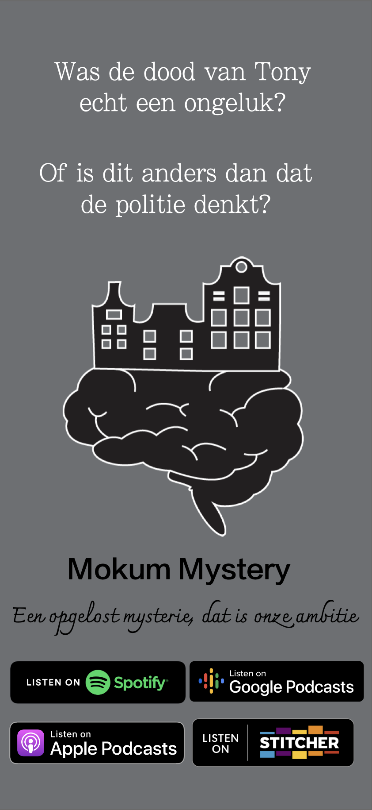
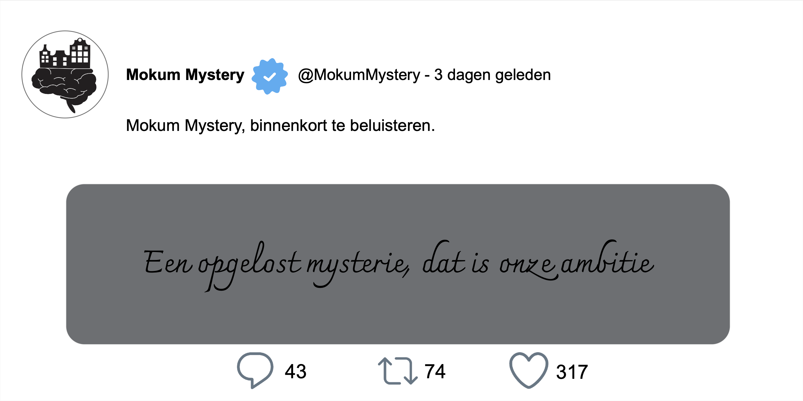

Ik ben Yasmine Hennik en al jaren actief als privédetective in Amsterdam. In mijn werk krijg ik vaak te maken met bizarre gebeurtenissen waar de politie weinig of niets mee kan. Binnen mijn bedrijf proberen we door middel van theorieën, verklaringen en tips deze zaken toch op te lossen. Deze podcast ondersteunt hierbij.
Over ons:


- 


- 